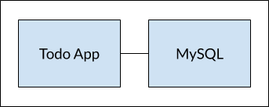

Docker文档翻译
官方文档学习
Part1: Overview
容器是什么?
容器是一个运行在宿主机上的沙盒程序, 他孤立于宿主机上运行的所有其他程序. 这种孤立是通过内核命名空间和cgroups实现的.
总的来说, 一个容器:
- 是一个可运行的镜像的实例. 你能够使用Docker API或者CLI创造、启动、停止、移动或者删除一个容器;
- 能够在本地、虚拟或者云端的机器上运行
- 是轻便的,并且可以运行在任何操作系统中
- 与其他的容器相互独立, 运行自己的软件、二进制程序、配置等
镜像是什么?
一个运行中的容器使用一个独立的文件系统. 这个独立的文件系统由镜像提供, 并且镜像必须包含运行一个程序所需一切——全部的依赖、配置、脚本、二进制程序等. 这个镜像也包含其他的对容器的配置, 比如环境变量、 默认运行的指令和其他元数据.
Part2: Containerize an application
环境准备
- 安装最新版本的Docker Desktop
- 安装Git
- 安装IDE
获取APP
- 从Docker官方提供的仓库中克隆项目
1 | git clone https://github.com/docker/getting-started-app.git |
- 查看项目结构
1 | ├── getting-started-app/ |
构造APP的镜像
构建镜像, 需要使用Dockerfile. 一个Dockerfile是一个普通的没有扩展名的文本文件, 这个文件包含着指令的脚本. Docker会用这个脚本构造容器镜像.
- 在
getting-started-app目录下, 和package.json文件同一个目录下, 创造一个名为Dockerfile的文件. - 通过IDE将如下内容添加到Dockerfile中
1 | # syntax=docker/dockerfile:1 |
- 使用如下指令构建镜像
在终端中确保你的路径是在getting-started-app文件夹中.
将以下指令中的/path/to/getting-started-app替换为你自己的路径
1 | cd /path/to/getting-started-app |
docker build命令使用Dockerfile来构建一个新的镜像.
你可能注意到了Docker下载了许多“layer”.
这是因为你告诉构建器你想从node:18-alpine这个镜像开始构建.
但是因为你的设备上没有, 因此Docker需要下载这个镜像.
在Docker下载这个镜像之后,
Dockerfile文件中的指令复制你的APP并且使用yarn指令来安装你APP的相关依赖.
CMD指定了从镜像启动容器时默认的运行指令.
-t getting-started为你的镜像打上getting-started标签.
可以认为是为最终的镜像取一个可读的名字.
因为你通过打标签为镜像指定了getting-started这个名字,
当你运行一个容器时可以使用这个名字.
在docker build最后的.告诉了Docker,
应该从当前文件夹下查找Dockerfile文件
运行容器
现在你有一个镜像了,
你能够在容器中运行这个APP容果docker run这条指令.
- 通过
docker run指令运行镜像并且指定你刚才创建的镜像的名字
1 | docker run -dp 127.0.0.1:3000:3000 getting-started |
-d这个标记(是--detach的简写)让容器后台运行.
-p这个标记(是--publish)在宿主机和容器之间创造了一个端口映射.
-p标记获取一个符合HOST:CONTAINER形式的字符串,
其中HOST是宿主机中的端口地址,
CONTAINER是容器中的端口地址.
这个命令将容器的3000端口发布到宿主机的127.0.0.1:3000.
如果没有端口映射, 那么你讲无法在宿主机上访问这个APP.
- 在几分钟后, 从你的浏览器中打开https://locakhost:3000. 你将会看到你的APP

如果你简单的查看了你的容器,
你应该看到了至少一个使用getting-started镜像并且映射到3000端口的容器.
你能够通过Docker CLI或者Docker Desktop的图形接口查看你的容器.
在终端运行如下命令, 来列出你的容器
1 | docker ps |
输出应该与一下内容类似
1 | CONTAINER ID IMAGE COMMAND CREATED STATUS PORTS NAMES |
Part3: Update the application
在Part2部分, 你讲一个APP容器化了. 在这一个Part, 你讲更新你的APP和镜像. 你也将学习如何停止和删除一个容器.
更新源码
- 在
src/static/js/app.js文件中, 如下所示, 修改第56行
1 | - <p className="text-center">No items yet! Add one above!</p> |
- 使用
docker build命令, 更新你的镜像版本
1 | docker build -t getting-started |
- 使用更新后的代码, 启动一个新的容器
1 | docker run -dp 127.0.0.1:3000:3000 getting-started |
此时, 你可能看到如下的一个Error:
1 | docker: Error response from daemon: driver failed programming external connectivity on endpoint laughing_burnell |
发生这个错误的原因是当你旧的容器仍然在运行时, 你不能运行一个新的容器. 这个原因的本质是老的容器已经占用了3000端口, 只有一个进程能够监听一个特定的端口. 为了改正这个错误, 你需要移除旧的容器.
移除旧的容器
为了移除一个容器, 你必须要首先停止它. 只有已经它已经停止, 你才能移除它. 你能够通过CLI或者Docker Desktop的图形化借口来移除一个旧的容器.
- 通过
docker ps指令获取容器的ID
1 | docker ps |
- 使用
docker stop指令停止容器. 替换''为你从 docker ps中获取的ID
1 | docker stop <the-container-id> |
- 只要容器已经停止, 你能够通过
docker rm命令来移除它
1 | docker rm |
你可以通过
--force标签来让docker rm指令停止并且移除一个容器, 就想这样:docker rm -f <the-container-id>
启动已经更新的APP容器
- 现在! 通过
docker run命令启动你的APP
1 | docker run -dp 127.0.0.1:3000:3000 getting-started |
- 刷新你的浏览器, 你将看到更新后的内容
Part4: Share the application
现在你已经构建了一个镜像, 你能够分享它. 想要分享Docker镜像, 你需要使用Docker代理. 默认的Docker代理是Docker Hub, 它也是你使用的所有镜像的来源.
一个Docker ID能够让你访问Docer Hub, 它是世界上最大的容器镜像仓库和社区
创造一个仓库
在上传一个镜像之前, 你首先需要在Docker Hub上创建一个仓库.
- 在Docker Hub中登陆或者注册
- 点击创建仓库按钮
- 为仓库命名
getting-started, 确保它是公共的 - 点击创建
如下所示, 你能够在Docker Hub中看到一个Docker命令实例. 这个命令将会把镜像推送到仓库
上传镜像
- 在终端中, 运行你在Docker Hub中看到的
docker run指令. 注意, 你应该用你的Docker ID替换以下命令中第二个的docker
1 | docker push docker/getting-started |
但是, 当你执行以上命令时, 会出现如下错误提示:
1 | The push refers to repository [docker.io/docker/getting-started] |
为什么会失败？push 命令正在寻找名为 docker/getting-start
的映像，但没有找到。如果你运行
docker image ls，你也不会看到任何一个。
若要解决此问题，需要标记已构建的现有映像，以为其指定另一个名称。
使用命令
docker login -u YOUR-USER-NAME登陆Docker Hub使用
docker tag命令给getting-started镜像一个新名字. 将以下指令中的YOUR-USER-NAME替换为你的Docker ID
1 | docker tag getting-started YOUR-USER-NAME/getting-started |
- 现在再次执行
docker push. 如果你从Docker Hub中复制了指令, 那么你可以删掉tagname部分, 因为未向映像名称添加标记。如果未指定标记，Docker 将使用名为latest的标记。
Part5:数据持久化
你可能注意到了, 你的每次登陆容器的时候, 你的ToDoList都是空的. 为什么会这样? 在这一部分, 你将深入了解容器是如何工作的.
容器的文件系统
当一个容器正在运行时, 它为他的的文件系统使用了镜像中各种各样的层Layers. 每个容器也得到他自己的“暂存空间”来创造、更新、删除文件. 任何改变将不会在另一个容器中看到, 即使他们使用了同一个镜像.
- 通过以下指令, 启动一个
ubuntu容器, 并且让它创造一个./data.txt文件, 文件中写入了一个范围在1到10000内的随机数.
1 | docker run -d ubuntu bash -c "shuf -i 1-10000 -n 1 -o /data.txt && tail -f /dev/null" |
注意这个命令, 在这个命令中你通过bash运行了两个命令.
第一个命令采样了一个随机数并且将它写入到了./data.txt中.
第二个指令仅仅监听着一个文件来保持容器的运行.
在docker的容器中, 如果没有任何进程在运行, 那么docker会自动结束这个容器, 因此如果以上指令没有
&&后的部分, 那么当容器完成了将随机数写入文件后, 容器就会自动stop
- 确保你访问容器中的终端时能看到输出. 你能通过CLI或者Docker Desktop的图像接口.
在命令行中, 使用docker exec命令来访问容器.
你需要获取容器的ID(通过docker ps来获取). 在你的终端中,
执行如下指令
1 | docker exec <container-id> cat /data.txt |
你将看到一个随机数.
- 现在,
启动另一个
ubuntu容器(基于相同的镜像)并且你将看到你没有这个文件/data.txt. 在你的终端查看以下指令的输出.
1 | docker run -it ubuntu ls / |
这个指令会列出这个容器中的根路径中的所有文件. 如你所见,
没有data.txt这个文件的存在!
这是因为它只写入了第一个容器的暂存空间中.
- 通过
docker rm -f <container-id>来移除第一个容器
容器数据卷
从以上的经验中, 你可以得知: 每个容器都会基于镜像启动. 当你创造、改变或者删除文件时, 这些改变会在你移除容器时丢失, 并且Docker孤立了容器的所有修改. 你可用借助数据卷进行所有改变.
数据卷让我们可以将特殊文件系统中的路径与宿主机进行连接. 如果你在容器中挂载一个文件夹, 那么在这个文件夹中的改变也能够在宿主机中看到. 如果你挂载相同文件夹的容器重启, 你会看到相同的文件.
有两种数据卷挂载的方式. 这两者你最终都会使用, 但是你将会从数据卷挂载开始.
持久化ToDoList数据
默认情况下, APP存储ToDo数据到SQLite数据库中文,
其在容器的文件系统中的对应路径为/etc/todos/todo.db.
如果你对SQLite不熟悉, 别担心! 它是一个简单的关系型数据库,
他讲所有的数据存储在一个单独的文件中. 尽管在面对大规模数据时,
它不是最好的选择, 但是这只是一个demo.
你之后将学习如何切换不同的数据库引擎.
因为数据库是一个单独的文件如果你能够将这个文件在宿主机上持久化并且让它在下一个容器中可用, 那么这个新容器应该能够继承上一个容器的留下的数据. 通过创造一个数据卷并且将它挂载到你存储数据的文件夹中, 你就能够将数据持久化.
如上面所说, 你将会卷挂载. 你可以将卷挂载看做一个不透明的数据包裹. Docker完全管理数据卷, 包括它在磁盘上的存储位置. 你仅仅需要记住数据卷的名字.
创造一个数据卷并且启动容器
你能够通过CLI或者Docker Desktop图像化接口创造一个数据卷并且启动容器.
- 使用
docker volume create命令创造一个容器
1 | docker volume create todo-db |
再次使用
docker rm -f <id>命令停止并且移除APP容器, 如果它仍然在没有使用持久化数据卷的情况下运行的话启动APP容器, 并且使用
--mount选项指定一个数据卷挂载. 给数据卷命名, 并且将它挂载到容器中的/etc/todos中, 容器将会捕获路径下所有的文件.
1 | docker run -dp 127.0.0.1:3000:3000 --mount type=volume,src=todo-db,target=/etc/todos getting-started |
验证数据的持久化
- 运行容器, 添加若干项
- 停止并且移除APP容器
- 启动一个新的容器. 你将会看到你添加的项仍然存在
深入数据卷
许多人经常会问 "当我使用数据卷的时候Docker将我的数据存储到了那里?",
如果你也想知道, 你可以使用docker volume inspect命令
1 | docker volume inspect todo-db |
Mountpoint是数据在磁盘中实际存储的位置. 在大部分情况下,
你会需要拥有根路径的访问权限来访问宿主机中的这个文件夹.
Part6:使用绑定挂载
在上一部分, 你使用卷挂载持久化了你数据库中的数据. 当你需要持久化存储你的数据时, 卷挂载是最好的选择.
绑定挂载是另一种挂载方法, 它能够让容器从宿主机文件系统中共享一个文件夹. 处理应用程序时, 你能够使用绑定挂载将源代码挂载到容器中. 只要你保存文件, 容器会立刻观察到你的修改. 这意味着你能够在容器中运行一个进程, 让它来监控文件系统的改变并且对它们进行响应.
在这个章节, 你将会使用绑定挂载, 会使用一个叫做nodemon的工具来监控文件修改, 并且自动的重启APP. 在大多数的其他语言和框架中都会有等效的工具.
简单的数据卷形式比较
以下表格主要比较了卷挂载和绑定挂载的不同
| 具名数据卷 | 绑定挂载 | |
|---|---|---|
| 在宿主机中的位置 | Docker来决定 | 你来决定 |
| 挂载示例 | type=volume,src=my-volume,target=/usr/local/data |
type=bind,src=/path/to/data,target=/usr/local/data |
| 是否会使用容器内容填充新的数据卷 | 会 | 不会 |
| 是否支持数据卷驱动 | 是 | 否 |
尝试绑定挂载
在你学习如何使用绑定挂载来开发你的APP之前, 你可以运行一个快速地实验来更加实际的理解绑定挂载是如何工作的.
如果你想要在Windows中使用Git Bash来运行Docker命令, 查看Working with Git Bash来了解语法上的不同
- 打开命令行, 并去往
getting-started文件夹 - 运行以下指令,
在一个使用绑定挂载的
ubuntu容器中启动bash
1 | docker run -it --mount type=bind,src="$(pwd)",target=/src ubuntu bash |
--option选项告诉Docker创造一个绑定挂载,
其中src是宿主机上的当前工作目录,
target是容器中文件夹存在的目录(/src).
- 在运行以上命令后,
Docker启动了一个交互式的
bash会话在容器的文件系统中的根目录下
1 | root@ac1237fad8db:/# pwd |
- 进入到
src文件夹下
当你启动这个容器时, 它是你挂载的文件夹. 列出这个文件夹的内容,
它与宿主机中的getting-started-app文件夹中的内容相同.
1 | root@ac1237fad8db:/# cd src |
- 创建一个新的名为
mufile.txt的文件
1 | root@ac1237fad8db:/src# touch myfile.txt |
- 打开宿主机中的
getting-started-app文件夹, 观察文件夹中的myfile.txt文件
1 | ├── getting-started-app/ |
- 在宿主机上删除
myfile.txt文件 - 在容器中再次列出
app文件夹中的内容, 观察现在的文件.
1 | root@ac1237fad8db:/src# ls |
- 使用
Ctrl+D关闭容器的交互式会话
以上是一个对绑定挂载的简介. 这个示例展示了文件是如何在宿主机和容器之间共享的, 展示了改变是如何立刻在两者之间响应的. 现在你可以使用绑定挂载来开发软件了.
开发容器
在本地开发中使用绑定挂载是普遍的. 它的优势是开发机不需要有全部的构建工具和环境. 一个Docker的命令, Doker会拉取依赖和工具.
在开发容器中运行你的APP
接下来会展示如何使用绑定挂载运行一个开发容器:
- 挂在你的源代码到容器中
- 安装所有的依赖
- 启动
nodemon来查看文件系统的修改
你可以使用CLI或者Docker Desktop来使用绑定挂载运行你的容器
- 确保你没有任何
getting-started容器在运行 - 在
getting-started-app文件夹下运行以下指令
1 | docker run -dp 127.0.0.1:3000:3000 \ |
以下是对指令的解析:
-dp 127.0.0.1:3000:3000与之前一样. 进入后台运行模式并且创造一个端口映射-w /app设置"工作目录"或命令将会运行的文件夹地址(容器中的)--mount type=bind, src=$(pwd), target=/app将宿主机中的当前文件夹绑定到容器中的/app文件夹.node:18-alpine指定使用的镜像.sh -c "yarn install && yarn run dev"你启动一个shell并且运行yarn install来安装包, 然后运行yarn run dev来启动开发服务器. 如果你查看package.json, 你将看到dev模式启动的nodemon
- 你能够使用
docker logs <container-id>查看日志, 当你看到如下输出, 你知道已经准备好了
1 | docker logs -f <container-id> |
使用开发容器开发你的APP
在宿主机上更新APP并且查看容器的响应
- 在
src/static/js/app.js文件的119行, 修改"Add Item"按钮, 将其简化为 "Add"
1 | - {submitting ? 'Adding...' : 'Add Item'} |
保存文件
刷新你浏览器中的页面, 你将会看到容器对修改的响应几乎是立刻的. Node的重新启动可能需要花费几秒. 如果你看到了报错, 尝试几秒钟后刷新.
每次你进行修改并且保存文件, 容器中的
nodemon进程将会重启APP. 当你开发完毕, 停止容器并且通过以下命令构建新的镜像
1 | docker build -t getting-started . |
Part7:多容器APP
在上面的例子中, 你已经使用了单容器APP, 但是, 现在你将添加MySQL到APP的栈中. 一个问题随之而来: MySQL运行在哪里? 将它安装在同一个容器中还是单独运行? 总的来说, 每个容器应该只用做好一件事. 有几个理由支持你选择单独运行:
- 这一个在不同数据库的情况下评估你的APIs和前端的好机会
- 独立的容器让你的版本和版本更新更加独立
- 尽管你可能基于本地数据库运行一个容器, 你可能想要在产品中托管数据库. 你不会想把APP和数据库一起交付的
- 运行多进程需要一个进程管理器(容器只会启动一个进程), 这为容器的启动和关闭增加了复杂度
有更多的理由支持单独运行. 所以, 如下图所示, 最好的在多个容器中运行你的APP
容器网络
记住, 默认情况下, 容器是独立运行的, 并且它不会知道同一个机器中运行的任何其他进程. 所以, 如何让一个容器和另一个容器进行会话? 答案是网络. 如果你将两个容器放置在同一个网络中, 它们就可以互相通话.
启动MySQL
有两种方式将一个容器放置在一个网络中:
- 在容器启动的时候指定网络
- 将一个正在运行的容器连接到一个网络
在接下来的步骤中, 你首先会创造网络并且在一开始挂载MySQL容器
- 创造网络
1 | docker network create todo-app |
- 启动一个MySQL容器并且将它挂载到这个网络中. 你也会定义一个用于数据库初始化的环境变量. 可以在这里的"Environment Variables"部分中进一步了解环境变量.
1 | docker run -d \ |
在上面的命令中, 你能够看到--network-alias标签.
在之后的部分你将会进一步了解这个标签.
你会注意到在上面的命令中用到了一个叫做
todo-mysql-data的数据卷, MySQL将会把数据存储到这个数据卷中. 但是你从没有通过docker volume create命令来创造它. Docker允许你使用一个具名数据卷并自动的创造它.
- 为了证明你的数据库已经运行起来, 链接数据库并且验证链接
1 | docker exec -it <mysql-container-id> mysql -u root -p |
在输入密码后, 在MySQL的终端中,
列出所有数据库来验证todos数据库
1 | mysql> SHOW DATABASES; |
你会看到如下内容:
1 | +--------------------+ |
- 退出MySQL命令行
1 | mysql> exit |
你现在有了一个todos数据库, 并且它已经准备就绪
连接MySQL
现在你知道了MySQL已经运行了起来. 但是你要如何使用它呢? 如果你在同一个网络中运行另一个容器, 你如何找到这个容器? 记住每个容器有它自己的IP地址.
为了回答以上的问题并且更好的理解容器网络,
你将会使用nicolaka/netshoot容器,
它集成了许多在问题返回和网络问题dubug时非常拥有的工具.
- 使用
nicolaka/netshoot镜像运行一个容器, 确保它和MySQL容器连接在同一个网络
1 | docker run -it --network todo-app nicolaka/netshoot |
- 在容器每部使用
dig命令, 它是一个有用的DNS工具. 你将会看到名为mysql的IP地址
1 | dig mysql |
你将会得与下面类似的输出
1 | ; <<>> DiG 9.18.8 <<>> mysql |
在"ANSWER SECTION"中, 你将会看到一个A记录,
它记录了mysql主机的地址为172.23.0.2(你的IP地址很可能是一个不同的值).
mysql不是一个合法的主机名,
Docker能为拥有network alias(网络别名)的容器分配IP地址.
记住, 你之前用过了--network-alias.
这意味着你的APP只需要链接一个名为mysql的主机,
它们就可以进行通话了.
使用MySQL运行你的APP
todo APP支持几个环境变量的设置指定MySQL连接的设置. 他们是:
MYSQL_HOSTMySQL服务器的主机名MYSQL_USER连接时使用的账号MYSQL_PASSWORD连接时使用的密码MYSQL_DB连接的数据库
尽管使用环境变量在开发时被普遍接受, 但是在生产环境中极不提倡. Diogo Monica, 一个Docker安全的leader在这里解释了为什么.
一个更加安全技巧是使用你的容器业务流框架来提供秘钥支持. 在大多数情况下, 这些秘钥被挂载在一个运行的容器中. 你将看到许多APP(包括MySQL镜像和todo APP)也支持一个以
_FILE为后缀的环境变量来指定一个包含变量的文件.举个例子, 设置
MYSQL_PASSWORD_FILE变量将会使用指定文件中的内容作为连接密码. Docker不会做任何事来支持这些环境变量. 你的APP将会需要知道这些变量并且获取文件的内容.
你现在可以启动你的开发容器
- 在将容器连接到你的APP网络的时候指定每一个环境变量. 在运行命令时,
确保你正处于
getting-started-app文件夹下
1 | docker run -dp 127.0.0.1:3000:3000 \ |
- 如果你查看容器的日志(
docker logs -f <container-id>), 你将会看到与下面相似的信息, 它表明了容器正在使用mysql数据库
1 | $ nodemon src/index.js |
在浏览器中启动你的APP, 并且尝试添加几项
连接mysql数据库并且验证你添加的项已经写入了数据库
1 | docker exec -it <mysql-container-id> mysql -p todos |
在 mysql的终端中, 你将会看到如下内容:
1 | mysql> select * from todo_items; |
你的表格将会看起来有些不同, 因为你的有你自己的不同的项. 但是你应该也会看到他们被存储在这里.
小总结
经过以上的内容, 你知道了在启动一个APP时需要做的事情, 你需要创造一个网络, 启动容器, 指定所有的环境变量, 暴露端口等等. 确实需要记住很多东西, 并且这些在一定程度上增加了复现的难度.
在接下来的Docker组件部分中, 你将会学习如何将以上内容简化为一条指令.
Part8:使用Docker组件
Docker组件是一个帮助你定义并且分享多容器应用的工具. 你能够创造一个YAML文件来定义服务并且通过一个单独的命令, 你能够让每一个部分运行起来或者让它们停止.
创造组件文件
在getting-started-app文件夹下,
创建compose.yaml文件
1 | ├── getting-started-app/ |
定义APP服务
在Part7部分, 你使用如下指令启动数据库服务
1 | docker run -dp 127.0.0.1:3000:3000 \ |
你将在compose.yaml文件中重新定义这个服务
- 在IDE中打开
compose.yaml文件, 并且通过名字定义和第一个你想作为你APP的一部分来运行的镜像启动. 其中名字会自动变成一个网络别名, 它在你定义MySQL服务时有用.
1 | services: |
- 你将看到
command标签紧挨着image标签定义, 虽然他们的顺序其实无所谓. 追加command标签到你的compose.yaml文件中
1 | services: |
- 现在将命令中的
-p 127.0.0.1:3000:3000部分迁移到文件中ports下
1 | services: |
- 接下来, 迁移工作文件夹(
-w /app)和数据卷映射(-v "$(pwd):/app")通过使用working_dir和volumes两个定义
一个Docker组件的优势是你可以使用相对路径
1 | services: |
- 最终, 你需要迁移环境变量到
key下
1 | services: |
定义MySQL服务
现在, 是时候定义MySQL服务了. 你之前使用的命令是:
1 | docker run -d \ |
- 首先定义新的服务并且将其命名为
mysql, 这样就能自动设置网络别名. 此外也要指定使用的镜像
1 | services: |
- 接下来, 定义卷映射. 当你使用
docker run运行容器时, Docker会自动创建具名数据卷. 然而在你使用组件运行时, 这并不会发生. 你需要在最外层定义volumes:部分并且在其中指定挂载点. 如果你只填写数据卷的名字, 那就会采用默认配置.
1 | services: |
运行APP栈
现在你配置好了compose.yaml文件, 你可以启动你的应用了
- 确保没有其他的相关容器正在运行.
使用
docker ps和docker rm -f <ids>来移除它们. - 通过
docker compose up命令启动APP栈, 添加-d标签指定后台运行模式
1 | docker compose up -d |
当你运行以上的命令, 你应该能够看到如下输出:
1 | Creating network "app_default" with the default driver |
- 可以通过
docker compose logs -f指令来查看日志. 你将看到每一个服务的日志被汇总到一个文件流中. 当你想要监控试讲相关的问题时, 这会难以置信的有用.-f标签会让它实时呈现它生成的输出.
如果你已经运行了命令, 你将看到与以下信息相似的内容
1 | mysql_1 | 2019-10-03T03:07:16.083639Z 0 [Note] mysqld: ready for connections. |
每行的开头会显示服务名来区分信息. 如果你想要查看某个特定的服务的输出,
你可以在命令的最后添加服务的名称(比如:docker compose logs -f app)
- 此时, 你应该在你的浏览器中打开http://localhost:3000来查看它的运行情况.
在Docker仪表片中查看APP栈
如果你查看Docker仪表盘,
你将看到有一组的名字为getting-started-app.
这是来自Docker组件的项目名, 并且这个组会统一操作容器. 默认情况下,
项目名是compose.yaml文件所在的文件夹名称.
如果你展开这个栈, 你将会看到两个你在组件文件中定义的容器.
它们会有一些额外的说明,
比如它们伴随的<serrvice-name>-<replica-number>.
所以, 你能很快的定位哪个是你的APP, 哪个是你的MySQL数据库.
停止它们
当你想要将它们全部定下时,
运行docker compose down命令或者在Docker仪表盘中点击垃圾桶.
这些容器将会停止, 并且容器网络将会被移除.
默认情况下, 你的组件文件中的具名数据卷在你运行
docker compose down时不会被移除. 如果你想要移除这个数据卷, 你需要追加--volumes标签.当你在Docker仪表盘中移除APP栈时, 数据卷将不会被移除.
Part9:构建镜像的最佳实践
镜像层
使用docker image history命令,
你能够看到使用一个镜像创建每一层的命令
- 使用
docker image history命令查看你创建的getting-started镜像的每一层
1 | docker image history getting-started |
你应该能够看到如下输出
1 | IMAGE CREATED CREATED BY SIZE COMMENT |
每一样代表镜像中的一层. 这里的输出展示了最底层的基层, 和顶部的最新层. 你能够通过这些快速查看每一层的大小, 并且用于诊断大的镜像.
- 你会注意到有几行被删除了, 如果你追加
--no-trunc标签, 你将会获取完全的输出
1 | docker iamge history --no-trunc getting-started |
层缓存
现在你看到了步骤中的层, 这对你减少容器镜像的构造时间非常重要. 一旦一个层改变, 所有的下游层都将会重构.
查看你刚才编写的用于启动APP的Docker文件
1 | # syntax=docker/dockerfile:1 |
回到镜像的历史输出, 你看到Docker文件中的每一层都会变成镜像中一个新的层. 你可能会记得, 当你改变镜像时, yarn的依赖会被重新安装. 每次一构建时提交相同的依赖并没有什么意义.
为了改正它, 你需要重构你的Docker文件来支持对这些依赖的缓存.
对于Node基础的应用, 这些依赖在package.json文件中被定义.
你可以再开始时只复制这个文件, 安装依赖, 并且之后再将其他东西移入.
之后只有你修改package.json时才会引起yarn依赖的重构.
- 修改Docker文件, 来在开始的时复制
package.json, 安装所有依赖, 之后再将所有内容粘贴进去.
1 | # syntax=docker/dockerfile:1 |
- 在Docker文件的相同目录下创造一个
.dockerignore文件, 追加如下内容
1 | node_modules |
.dockerignore文件是一种简洁仅仅复制镜像相关文件的方式.
你能够在这里进一步了解.
在这个案例中node_module文件夹应该在第二次复制时省略,
否则它可能会覆盖在"RUN"步骤中创建的文件.
想要进一步了解为什么对于Node.js来说这么做是被推荐的,
和其他的最佳实践可以查看这里
- 使用
docker build构建一个新镜像
1 | docker build -t getting-started . |
你应该会看到如下内容
1 | [+] Building 16.1s (10/10) FINISHED |
现在, 尝试修改"src/static/index.html"文件. 例如修改
<title>标签为"To Awesome ToDo APP"现在再次使用
docker build -t getting-started .命令构建Docker镜像. 这次你的输出应该会看上有一些不同
1 | [+] Building 1.2s (10/10) FINISHED |
首先, 你注意到这次构建会快很多. 并且你会看到有几步会使用之前缓存的层. 推送和拉取会跟修改一样变快.
多步构建
多步构建是一个难以置信的强力工具, 它能够让我们使用多步构建来构造镜像. 它有如下几个有点:
- 从运行依赖中分离出构造依赖
- 只提交你APP运行时需要的内容, 以此减少镜像的整体大小
Maven/Tomcat例子
在构造java基础的应用时, 你需要使用JDK来将源代码编译为java字节码文件. 然后JDK在生产环境中并不被需要. 此外, 你也会用Maven或者Gradle工具来帮助你构建APP. 这些东西在你的最终镜像中也不被需要. 此时多步构建就能起到作用.
1 | # syntax=docker/dockerfile:1 |
在这个例子中,
你使用一个步骤(叫做build)来使用Maven执行Java的实际构建.
在第二步(在FROM tomcat这里启动), 你从"build"步骤中复制文件.
最终的镜像仅仅是最后一步构建的,
可以使用--target重写这一部分
React例子
当你构建React应用时, 你需要一个Node环境来编译JS代码, SASS样式表, 获取更多的静态的HTML, JS和CSS文件. 如果你不需要进行服务器侧渲染, 那么你的生产环境中并不需要一个Node环境. 你能够在一个静态的nginx容器中提交这些静态资源.
1 | # syntax=docker/dockerfile:1 |
在以上的Docker文件示例中,
使用了node:18镜像来构建(最大化了层缓存)并且在之后将其输出复制到了nginx容器中.
docekr search docker pull docker run docker stop docker compose docker ps docker remove